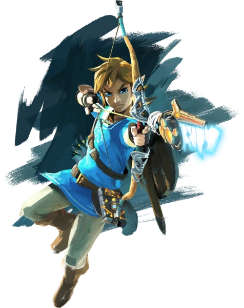
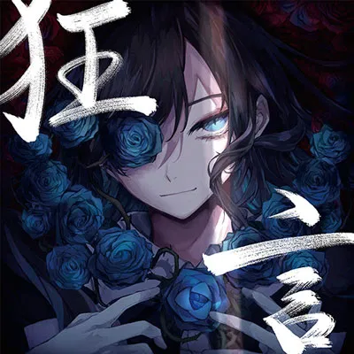

Min största intresse är att spela spel. Jag älskar att spela spel på min dator,
nintendo switch och konsoler, vad som går att spela på helt enkelt. Min favorit genre av spel
är först och främst adventure och open-world spel. Det är alltid kul att utforska en stor värld
och hitta nya saker. Jag har svårt att klara av spel, men adventure och open-world spel är
oftast den enda typen av spel jag klarar av. Dock spelar jag också multiplayer, competitive
och co-op spel med mina vänner. Spel som Overwatch, Roblox, Fortnite, League och så vidare.
Mina mest älskade spel av open-world/adventure genren är Legend of Zelda: BOTW och Minecraft.
De var alltid spel jag var bekväm att spela och komma tillbaka varje år.
Jag gillar även att lyssna på music. Jag lyssar i princip överallt som är inte
inomhus. Ute på gatan, trotoaren, tåget, busen och bara utomhus i helhet. Dessutom lyssnar jag
på musik när jag läser Manhwa och kanske lite bakgrunds musik när man spelar. Jag lyssna på lite
på typ allt oavsset om den är svensk, engelsk, japansk, jag bryr mig inte så länge den låter bra.
Främst lyssnar jag på J-Pop och J-Rock, alltså japansk pop och rock respektivt. Det är svårt för
mig att säga vilkenartist är min allra favorit, dock utan problem kan jag säga det är antingen ADO
eller Eve. De är artister som jag är lyssnat på sen jag hittade japansk musik och fortfarande ligger
högst inom mina favoriter, oavsett hur många låtar jag lyssnar på. Deras musik är så unik och groovy
på sin eget sätt som andra artister kan inte göra lika bra för mig.
